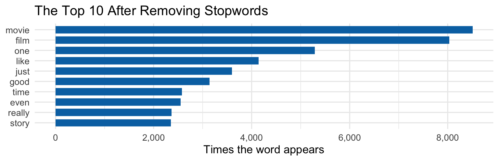
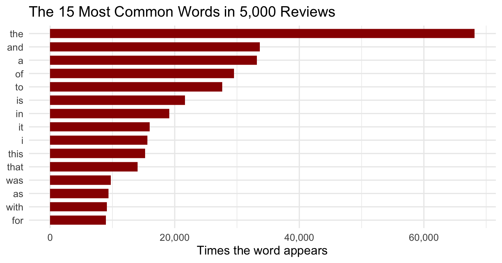
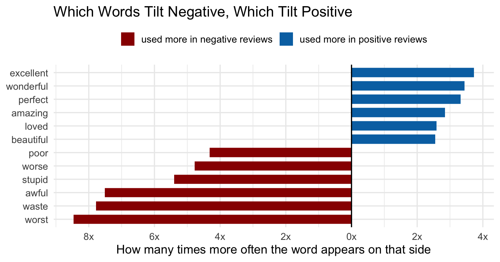
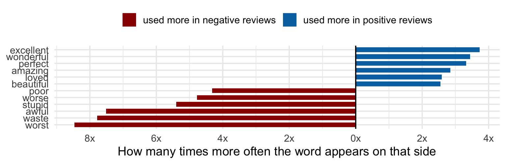

MKT 566 · Fall 2026
USC Marshall School of Business
Last Tuesday the neural network slide said: in marketing, the fancy models shine on text and images. This week we make good on the text half.
This is not a new kind of analytics. It is the same pipeline as always, with one extra step at the front: text in, numbers out, then the usual models.
| Step | What it does | Example |
|---|---|---|
| 1. Clean | lowercase, strip punctuation and HTML | “Great movie!” becomes “great movie” |
| 2. Tokenize | split the text into words | “great movie” becomes [“great”, “movie”] |
| 3. Drop stopwords | remove glue words that carry no meaning | “the”, “a”, “and” go away |
| 4. Count | one row per document, one column per word | the bag-of-words matrix |
| 5. Weight | up-weight distinctive words | TF-IDF |
| 6. Model | feed the numbers to a model | the logit from week 5, Thursday |
Steps 1 to 5 are new today. Step 6 is not new: once text is a matrix of numbers, everything from weeks 4 to 9 applies unchanged.
Real data, loaded live: the movie_review dataset that ships with the text2vec R package. 5,000 IMDB reviews, each labeled positive or negative (2,517 positive, 2,483 negative).
Two real examples, shortened:
“the classic war of the worlds” by timothy hines is a very entertaining film that obviously goes to great effort and lengths to faithfully recreate h. g. wells’ classic book. mr. hines succeeds in doing so. i, and those … (positive)
this movie could have been very good, but comes up way short. cheesy special effects and so-so acting. i could have looked past that if the story wasn’t so lousy. if there was more of a background story, it would have be… (negative)
After cleaning, these 5,000 reviews contain about 1.2 million words drawn from 41,891 distinct terms. Nobody reads that; the pipeline turns it into a table.
One sentence, worked through:
| Stage | Result |
|---|---|
| Raw | Great movie!! <br /> A must-see... 10/10 |
| Lowercase | great movie!! <br /> a must-see... 10/10 |
| Strip HTML and punctuation | great movie a must see 10 10 |
| Tokenize (split on spaces) | great · movie · a · must · see · 10 · 10 |
<br />, which would otherwise become a nonsense token. Look at your tokens before you model themSplitting into single words destroys word order, and sometimes the order is the meaning:
goodnot_good becomes its own token, distinct from good
Every word in all 5,000 reviews, counted. What do you notice about the words at the top, and how useful would they be for telling a good review from a bad one?

Take a tiny, made-up corpus of three phone reviews, and count every word in every document:
| doc | battery | camera | great | phone | screen | terrible |
|---|---|---|---|---|---|---|
| A | 0 | 1 | 2 | 1 | 0 | 0 |
| B | 1 | 0 | 0 | 0 | 1 | 2 |
| C | 1 | 0 | 1 | 0 | 0 | 0 |
On the real corpus, the same table is 5,000 rows by 41,891 columns, one column for every distinct term.
A word matters for a document when it is common in that document but rare everywhere else. TF-IDF scores exactly that, in two parts:
For document A (“great phone great camera”, 4 words) with \(N = 3\) documents:
| word | count in A | TF = count/4 | docs with word | IDF = log(3/df) | TF-IDF |
|---|---|---|---|---|---|
| camera | 1 | 0.25 | 1 | 1.10 | 0.275 |
| phone | 1 | 0.25 | 1 | 1.10 | 0.275 |
| great | 2 | 0.50 | 2 | 0.41 | 0.203 |

For every word, we counted how often positive reviews use it and how often negative reviews use it (per 10,000 words), then took the ratio. “worst” at 8x on the left means negative reviews use it 8 times more often than positive ones. What do you see?

Bag-of-words has one blind spot left: to it, “great” and “awesome” are as unrelated as “great” and “battery”: different columns, nothing shared.
| Method | Each document becomes | Strength | Weakness |
|---|---|---|---|
| Bag-of-words | counts over the vocabulary | simple, readable | common words dominate; synonyms unrelated |
| TF-IDF | weighted counts | highlights distinctive words; the workhorse | still ignores meaning and order |
| Embeddings | an average of word vectors | captures meaning (great is close to awesome) | unreadable numbers; needs a pretrained model |
Default advice for marketing problems: start with TF-IDF. It is fast, transparent, and with a linear model it is a strong baseline. Reach for embeddings when synonyms clearly matter and you have the labels to prove the gain. Thursday we test exactly this on our 5,000 reviews.
Lexicon-based sentiment (the sentimentr package in R):
No training data needed: you can score a million reviews on day one. The price: the dictionary does not know your domain (“thin” is bad for a laptop battery and good for a laptop).
| Sentence | Sentiment score |
|---|---|
| This movie is great. | 0.25 |
| This movie is not great. | -0.22 |
| Absolutely terrible, I want my money back. | -0.28 |
| The plot is slow at first, but the ending is fantastic. | 0.13 |
Supervised sentiment is week 9 on text features. Every step is something you already know:
| Step | What you do | Where you learned it |
|---|---|---|
| 1. Label | each review marked positive or negative (ours already are) | the outcome, week 5 |
| 2. Vectorize | TF-IDF matrix: 5,000 rows, thousands of word columns | today |
| 3. Split | train/test, fit on train only | week 9 |
| 4. Classify | a logit on the word columns | week 5, plus Thursday’s fix for “too many columns” |
| 5. Evaluate | accuracy, precision, recall, AUC on the test set | week 9 |
When you have labels, the trained model beats the dictionary in your domain: it learns that “thin” is bad for batteries from your own reviews. Thursday we run this end to end and read which words the model trusts.
Two directions you should know exist, both one Google away:
The R code behind every chart and table:
w10-code.zip: the class script (the toy corpus, the frequency charts, TF-IDF by hand, the sentimentr demo)w10-1-text-analysis-class.R: same content, runnable line by line; the reviews load from the text2vec package, no download neededRequired reading: chapter 8 of Introduction to R for Data Science. Recommended: the HBR piece on fake reviews. Thursday: predicting sentiment with a regularized logit, and the in-class game.
MKT 566 · Marketing Analytics